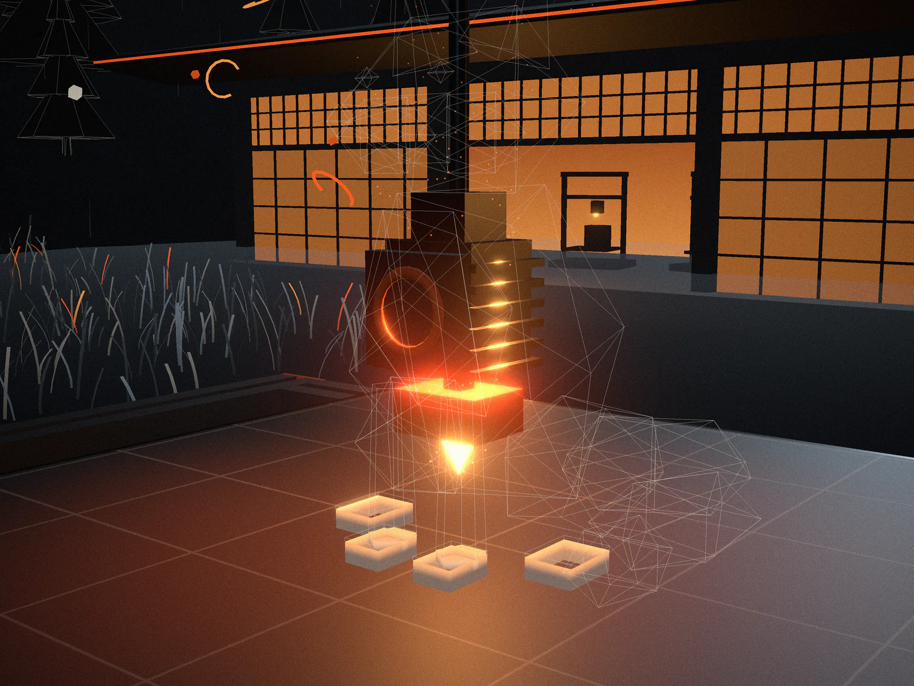
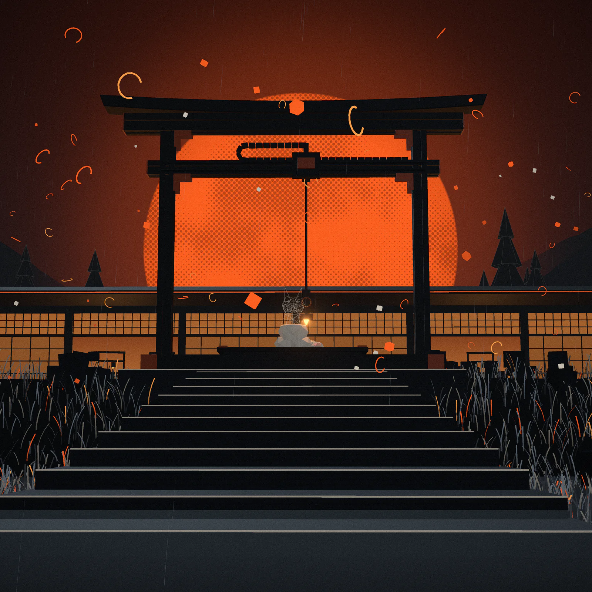
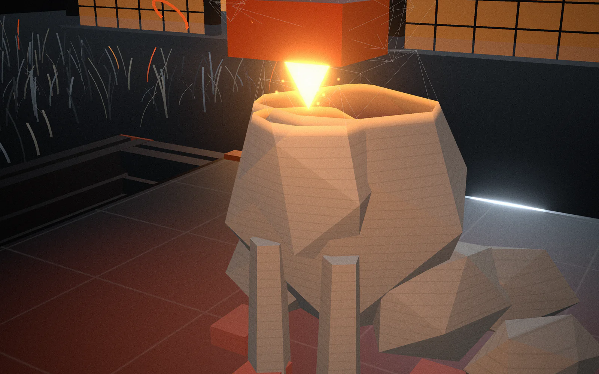
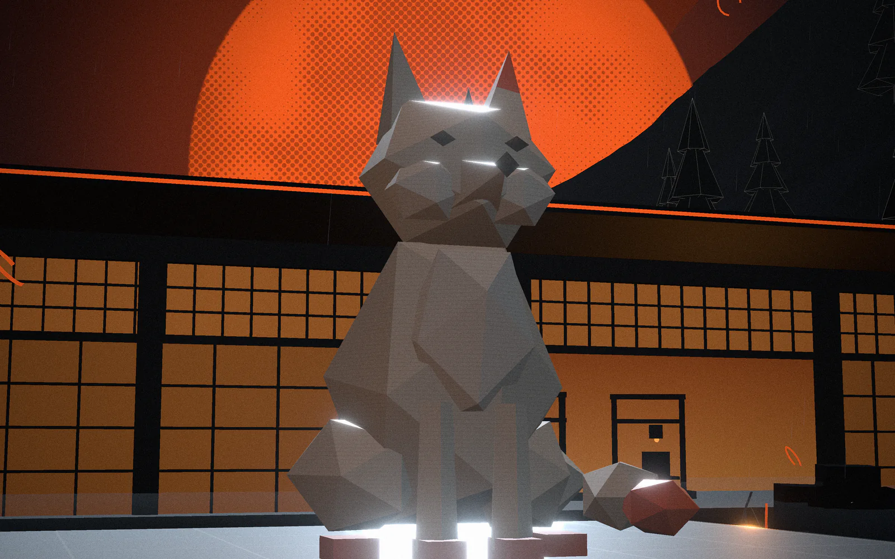
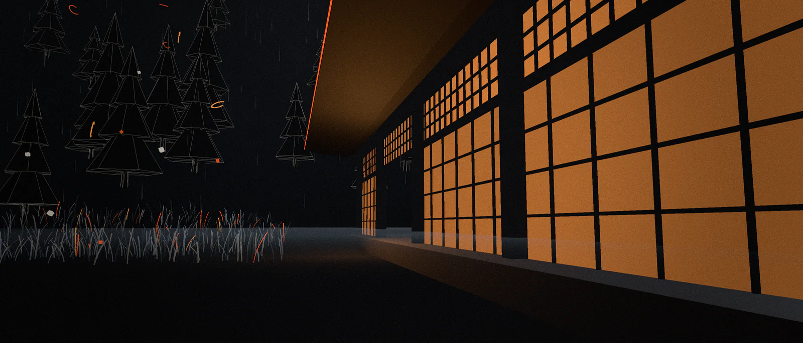

IoT & Robotics Club Presents Student Cabinet · School of CSET · Bennett University (NAAC A+)
Event 01 Nov 15, 2026
3DVERSE
A Journey From Imagination To Reality
An empty bed, a spool of light, one idea left open.
Every object starts the same way: cold glass, a coil of filament and a thought nobody has printed yet. For one day the IoT & Robotics Club opens its print lab to anyone with an idea. Come in empty-handed, leave holding something you designed.
Nov 15, 2026 · 10:00 AM – 4:00 PM · Tech Lab 3
Where imagination first touches the bed.

- Layer
- 0.20 mm
- Z-axis
- 000.20
- Bed
- 60 °C
- Nozzle
- 215 °C
Before the first layer there is only a flat build plate and a nozzle waiting 0.20 mm above it. This is where the walk begins: sketch it, slice it, send it, and watch one glowing line of filament turn a thought into a thing.
造形
Nothing moves but the nozzle.
Hours into a long print the lab goes quiet. Fans hum, hot-ends glow like lanterns, and a shape climbs out of the bed one hair-thin layer at a time.

参道
Approach

灯
Nozzles

冷却
Cooldown
One day. Six hours. A thousand layers.
Four sessions run through the day, 10:00 AM to 4:00 PM. No experience needed: every bench has printers, filament and people who have failed more prints than you will ever start.

光
The hall
-
01 積層Layering
3D Printing Workshop
Level, slice and print, then watch your first part rise layer by layer.
-
02 設計Design
3D Modeling Sessions
Turn a rough sketch into a clean model that is ready to print.
-
03 組立Assembly
Hands-on Building
Fit, sand and finish real parts with your own hands.
-
04 対話Dialogue
Expert Interactions
Bring your hardest question to people who print for a living.
From imagination to reality.
現実
One day in the lab. One object you'll carry home. Register, then bring an idea.
Register NowScan to register
Point your camera here
Learn 3D Printing Design Your Own Models
- Date
- Nov 15, 2026
- Time
- 10:00 AM – 4:00 PM
- Venue
- Bennett University, Tech Lab 3